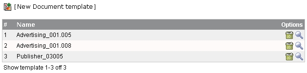
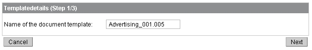
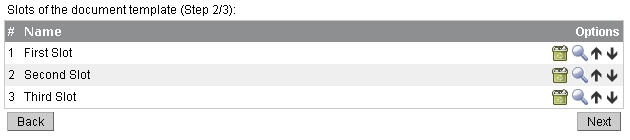

To manage the document templates, click on "Templates" in the menu (left-side). After that you will see a list of all available
templates (for all circulations).

There you can use the following actions:
Adding a new template to the list
Deleting the selected template
Edit the settings for the selected template
New Template / Edit a template - Step 1
If you add a template or clicked to edit an existing one you will get a page like the following:

Type in a name that should be used for the document template (i.e. "Template_Constrcution_Circulation")
New Template / Edit a template - Step 2
In the next step you will have to provide information about the logical structure of the planned circulations.
That means you can define the so called "Slots" (For informations about Slots please take a look at the Concepts page

On this page you can add and delete the slots for this document template. The actions are the same as you know from the other administration pages.
The only new actions are the up- and down-Arrows for sorting the Slots.
New Template / Edit a template - Step 3
The last step is for assigning input fields to the slots of the document template. You can select Fields on the right table of each slot and add them with the "Add"-Button.
In the next step you should setup one or more document mailing lists that can be used for Circulation messages. >> Mailing list